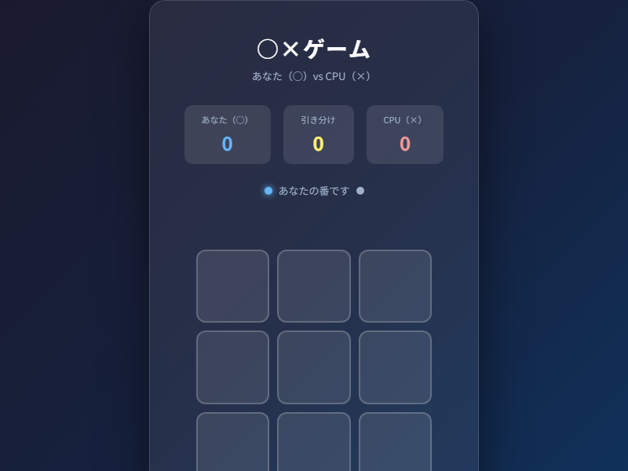
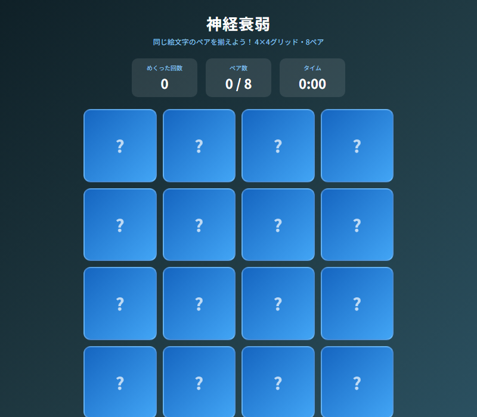
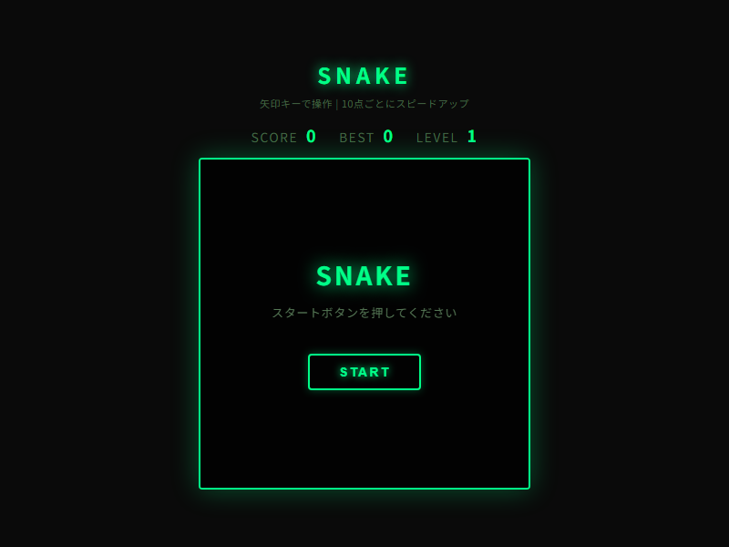
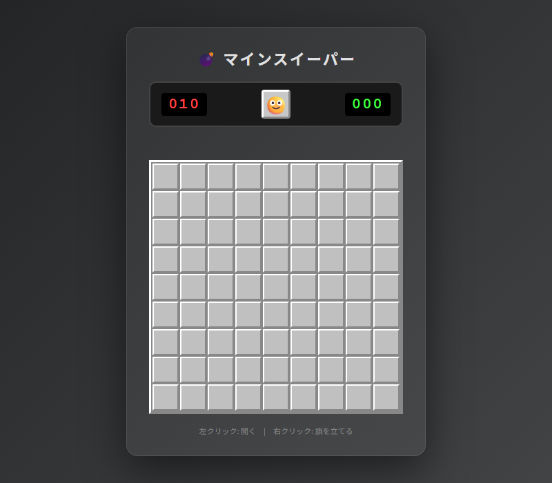

付録B HTMLの遊び場 ── ここまでできる
はじめに
本書はここまで、業務報告書の作成、提案書のデザイン、データの可視化など、一貫してビジネスの文脈でHTMLを語ってきました。HTMLは難しいプログラミング言語ではなく、「文章に役割を伝えるタグを付けるだけ」の道具だと、ご理解いただけたかと思います。
しかし最後に、少しだけ寄り道をさせてください。「HTMLで一体どこまでできるのか」──その可能性の端っこを、実際に手を動かしながら体験してほしいのです。本付録では、同梱のサンプルファイルとして収録した4本のゲームを通じて、ブラウザという舞台の広さを感じてもらいます。
ゲームがビジネスにつながる理由
「ゲームをビジネスで使う」と聞いて、不思議に思う方もいるかもしれません。しかし、ゲームの本質は「目標・ルール・フィードバック・報酬」の組み合わせです。そしてこれは、研修設計や業務改善にそのまま応用できます。
たとえば、新入社員向けのコンプライアンス研修を考えてみてください。厚い冊子を読むだけの研修より、○×形式のクイズゲームで「正解なら〇点、間違えたら解説が表示される」仕組みにした方が、理解度も定着率も上がることが多くの企業で報告されています。
社内ポイント制度への応用もあります。日報の提出、会議への早めの出席、アイデアの投稿といった行動にポイントを付与し、蓄積状況をHTMLページで可視化する。カードをめくるような演出を加えれば、毎朝ページを開くのが楽しみになります。
また、オンボーディング（入社時研修）をミッション形式にする企業も増えています。「社内ツールにログインしたらクリア」「上司に自己紹介したらポイント獲得」──スネークゲームのように段階的に難易度が上がる設計にすれば、新入社員は自然と次のステップへ進んでいきます。
HTMLと少しのJavaScriptがあれば、こうした仕組みを外部サービスに頼らず、社内で自作できます。本付録のゲームは、そのアイデアの「種」として読んでいただければ幸いです。
4本のゲーム紹介
1. 三目並べ（appendix_tictactoe.html）
AIへのプロンプト例：「3×3グリッドの○×ゲームを作ってください。プレイヤーは○、CPUは×でランダムに打ちます。勝敗・引き分けを判定してメッセージを表示し、もう一度ボタンでリセットできるようにしてください。」
三目並べは、HTMLゲームの入門として最適な題材です。グリッド9マスの状態管理、勝敗の判定ロジック、CPUの手番処理──これらはすべて、業務アプリでも頻繁に登場する「状態の変化を追う」という考え方と同じです。
ビジネス応用としては、研修後の確認クイズが代表例です。「正しいものを選んでください」という選択問題を○×の2択に変換し、正解・不正解でフィードバックを出す。3問すべて正解したら「合格！」と表示するだけで、受講者のモチベーションは大きく変わります。製品知識の定期テストや、セキュリティポリシーの理解度チェックにも転用できます。
2. 神経衰弱（appendix_memory_card.html）
AIへのプロンプト例：「4×4グリッドの神経衰弱ゲームを作ってください。絵柄は絵文字を使い、カードのめくりはCSS 3Dアニメーションで実装してください。めくった回数のカウンターとタイマーも表示してください。」
カードが180度回転してめくれるアニメーションは、CSSの transform: rotateY(180deg) だけで実現しています。「HTMLでこんな動きができるの？」と驚かれることの多い機能ですが、AIにプロンプトを投げれば1分で書いてくれます。
ビジネス展開として面白いのは、製品・サービスの記憶定着への応用です。新製品の名前と特徴を神経衰弱形式で覚える研修ツール、社員証の顔写真と名前を一致させる「顔と名前合わせゲーム」など、記憶を楽しく助けるツールとして活用できます。絵文字の代わりに商品写真や社員の顔写真を使えば、そのまま業務ツールとして機能します。
3. スネークゲーム（appendix_snake.html）
AIへのプロンプト例：「Canvas APIを使ったスネークゲームを作ってください。矢印キーとスワイプ操作に対応し、10点ごとにスピードが上がる仕様にしてください。ゲームオーバー画面とリスタートボタンも実装してください。」
スネークは Canvas API という、HTMLのキャンバス（画布）に自由に絵を描ける機能を使っています。グラフの描画、フロアマップの表示、動く図形の作成──Canvasができることは、ゲーム以外にも無限に広がります。
組織内への応用例として、KPIの進捗可視化があります。月次目標に対して日々の達成数を積み上げていくと、蛇のように伸びていくグラフが表示される。スピードが上がる（目標が高まる）という演出を、四半期の目標更新タイミングに合わせる。こうした遊び心のあるダッシュボードは、チームの士気向上に意外なほど効果的です。
4. マインスイーパー（appendix_minesweeper.html）
AIへのプロンプト例：「9×9グリッドで地雷10個のマインスイーパーを作ってください。左クリックでマスを開き、右クリックで旗を立てます。数字の色分けと、初回クリックでは地雷が当たらない仕様を実装してください。」
マインスイーパーは本書のゲームの中で最も複雑な実装を持ちます。「初回クリックでは地雷が当たらない」という仕様は、ユーザー体験を最優先した設計思想の表れです。この「最初の1クリックで理不尽に失敗させない」という考え方は、業務アプリのUX設計でも重要なヒントになります。
ビジネス応用としては、リスクマップの可視化が考えられます。プロジェクトのタスクをグリッドに並べ、完了・未着手・リスクあり・ブロック中といった状態を色とアイコンで表示する。クリックすると詳細が展開されるインタラクティブなステータスボードを、このゲームのコードをベースに作ることができます。
おわりに
本付録の4本のゲームはすべて、HTMLとJavaScript、そしてCSSだけで完結しています。外部のサービスへの登録も、専用ソフトのインストールも必要ありません。ブラウザさえあれば動きます。
プログラマーになる必要はありません。「こんなものが欲しい」というアイデアを言葉にして、AIに伝えるだけでいいのです。本書でお伝えしてきた通り、AIへの依頼はプロンプトという形の「日本語の指示」です。ゲームのコードが怖そうに見えても、それはAIが書いたものであり、あなたは動くかどうかをブラウザで確かめるだけでいい。
大切なのは、「HTMLでここまでできる」という体験を持つことです。その体験が、次の提案書を作るときの発想を変え、研修ツールのアイデアを生み、チームに共有したい情報のかたちを変えていきます。
あなたのアイデアを形にする道具として、HTMLとAIをぜひ使い続けてください。




appendix_tictactoe.html— 〇×ゲームappendix_memory_card.html— メモリーカード（神経衰弱）appendix_snake.html— スネークゲームappendix_minesweeper.html— マインスイーパー
本書サポートサイトよりダウンロードし、ブラウザで開いてご確認ください。